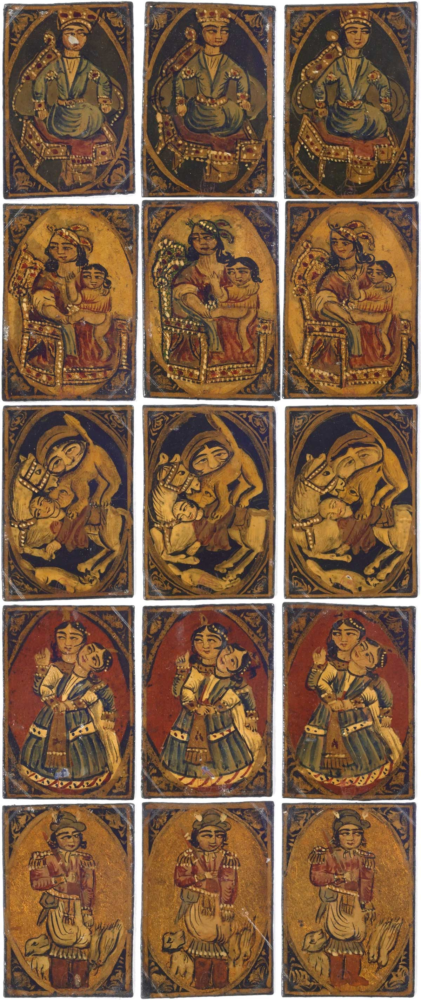

Le origini del poker non sono ben definite, ma i ricercatori pensano che il poker sia un discedente del gioco persiano As-Nas, che si ritiene essere nato nel 17° secolo

Ad un tavolo da gioco siedono da due a dieci giocatori. Si gioca con un mazzo da cinquantadue carte francesi (escludendo i jolly), di cui vengono fabbricate il tipo apposito con un solo indice per lato, stampato a caratteri più grandi, e al centro un riquadro col relativo seme o figura inscritto, le stesse usate per il blackjack.
A differenza di quanto previsto nel poker tradizionale, i giocatori ricevono solamente due carte a testa: esse, assieme alle cinque carte comuni (community cards) suddivise in Flop (le prime tre), Turn (la quarta) e River (la quinta) scoperte dal mazziere durante le varie e rispettive fasi di gioco, formeranno il punto di ogni giocatore.
Durente le puntate un giocatore ha 4 opzioni che può scegliere: Check (bussare), Call (vedere o chiamare), Raise (rilanciare) o Fold (abbandonare).
Se uno dei giocatori punta, per continuare a partecipare alla mano ciascuno dei giocatori che seguono deve quanto meno pareggiare l'ultima puntata (call). Tuttavia, se la puntata da coprire è maggiore dell'insieme di gettoni (stack) a disposizione di un giocatore, questi ha ancora la possibilità di accettare la scommessa versando nel piatto l'intero suo resto (all-in). Egli concorre in questo modo alla divisione del piatto: partecipa al gioco per la parte del piatto coperta dalle fiche a sua disposizione (main pot), mentre la parte residua del piatto (side pot) viene contesa tra gli altri giocatori che hanno coperto l'intera puntata. Vi può quindi essere più di un side pot durante la stessa mano.
Le combinazioni di carte con cui poi vincere